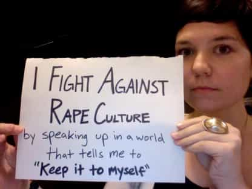
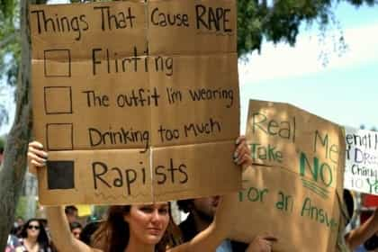

< < < Back
Rape Jokes About Men Are Okay – Return Of Kings
One of the incontrovertible pieces of evidence that feminists present for the existence of so-called rape culture—that is, a social environment that excuses or even encourages sexual violence toward women—is the supposed prevalence of “rape jokes.” The argument goes that by joking about rape you trivialize it, and therefore downplay its very real consequences on women and girls, encouraging behaviors (by men) that feed the cycle in the process. Add to that a society that engages in “slut shaming” and “blaming the victim” as a matter of course, and you live in a world in which women are beset on all sides by a specter of sexuality.
It’s no wonder that the term rape culture is the go-to, catch-all label for rape alarmists everywhere. Like Bush’s (and now Obama’s) War on Terror, rape culture is a never-ending struggle against an invisible enemy that could be anywhere. It thrives on ambiguity and interminability. The goal isn’t to win it, but to keep whipping up the hysteria.

You could devote an entire Tumblr to the fallacies, doublespeak, and incoherence around feminists’ views around rape alone—never mind other aspect of their ideology. Trivializing rape is bad, but they trivialize it the most by abusing the word with impunity, applying it to everything from actual, brutal rape to leering or catcalls.
“One in four women is raped in their lifetimes,” yet the methodology behind that go-to scare statistic has been repeatedly debunked and the figure revised enough times to eliminate any credibility. Women should be able dress how they please, act how they feel like, be as drunk as they want, go where they want (at whatever time they want), yet bear zero responsibility for their own safety. The list goes on, but the biggest hypocrisy is reserved for comedy.

One of the cardinal rules of rape culture is that rape is such a sacrosanct subject that it shouldn’t be joked about. In fact, Daniel Tosh famously got into trouble with armchair feminists everywhere for violating that commandment last year. This reignited the hysteria over rape jokes, despite the fact that most of us can count on one hand how many rape jokes—about women—we’ve actually ever heard.
A few comedians made the astute observation that feminism and comedians are natural enemies. What they omitted is that it isn’t that feminists don’t have a sense of humor, it’s that they don’t have a sense of humor about anything that affects women, especially those in their demographic—relatively privileged (and white) women. Jokes about men, especially ones that underscore their supposed oafishness and ineptitude, or in which they’re subjected to violence (even sexual violence), continue to be okay.
I needn’t point out the irony that probably the most common cultural meme about incarceration is about prison rape—which, of course, disproportionately affects men. Whenever a guy who’s judged to be due for his comeuppance (especially if he’s famous) gets sent to prison, the sodomy jokes are painfully repetitive. “Now he’s going to become someone’s girlfriend in jail!” “Hope he doesn’t drop the soap!” “He’s going to make someone very happy in prison!”
The recent arrest of Aaron Hernandez for alleged murder has dragged out all of the familiar gags, along with some new, situation-specific variations.
But where’s the feminist outcry over these rape jokes? It should come as no surprise that there isn’t any, and there never has been. This, despite the fact that prison rape actually affects one in five inmates, victimizes juveniles, and is disproportionately violent. This says nothing about the increased transmission rate of HIV and other diseases.
In the end, this is another data point to confirm that feminism—with its outcry rape culture and rape jokes—isn’t about rape at all. And, it certainly isn’t about men suffering rape. It’s about hypocritically promoting a world where already privileged women are shielded from any potential offense, and largely pardoned from responsibility for their own actions, while continuing to enjoy an a-la-carte platter of benefits from the “patriarchal” past.
In the end, it’s rape culture itself that’s the joke.
Read More: You-Go-Girlism Is More Toxic Than Feminism


{kind=link}
{kind=link}
{kind=link}
{kind=link}
{kind=link}